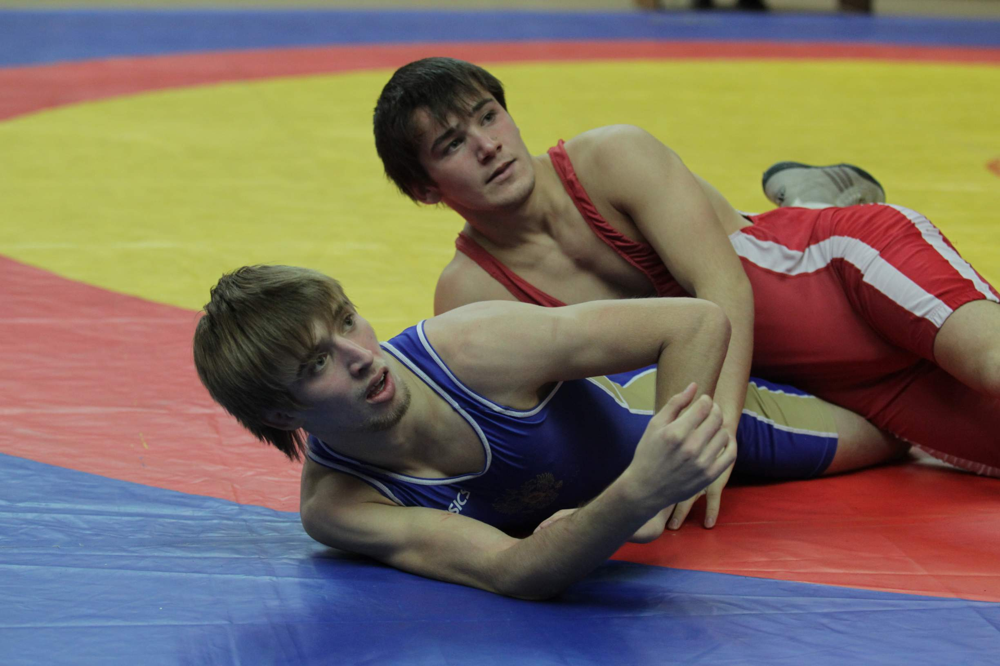
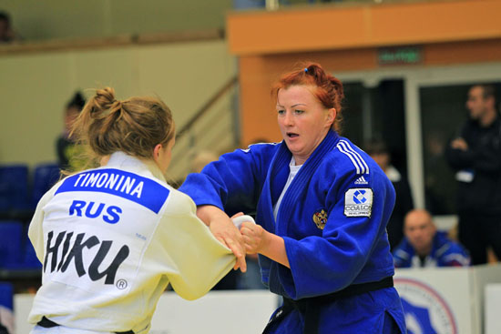
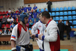

Репортаж
 Дело Шевалье живет...
Во Дворце спортивных единоборств ЦСКА завершилось Открытое первенство СДЮШОР ЦСКА памяти Шевалье Нусуева. Из когда-то маленького столичного мероприятия он вырос в представительный международный турнир.
Автор: cska.ru
19.11.2012
 С прицелом на Чемпионат России
С прицелом на Чемпионат РоссииНа конноспортивной базе Центрального спортивного клуба Армии состоялся традиционный «Открытый Кубок ЦСКА по конкуру» (преодоление препятствий).
Автор: cska.ru
13.11.2012
Долгожданная победа!
В футбольном манеже ЦСКА прошел очередной этап Чемпионата Центральных органов военного управления. На этот раз спортсмены «сошлись» в мини-футболе.
Автор: cska.ru
02.11.2012
 Начала сезон с победы!
В начале октября в Кемерово был дан старт новому олимпийскому циклу по дзюдо – Чемпионат России среди мужчин и женщин.
Автор: cska.ru
12.10.2012
 Токсово: и спорт, и отдых
Токсово: и спорт, и отдыхКаждое лето Спортивный комплекс «Токсово» филиала ФАУ МО РФ ЦСКА (СКА г.Санкт-Петербург) становится настоящим центром спорта и отдыха армейских спортсменов.
Автор: cska.ru
27.09.2012
 Первый в армии!
Первый в армии!Спортсмены ФАУ МО РФ ЦСКА совместно со звездами Первого канала отправились в Наро-Фоминск, чтобы стать участниками акции «Первый в армии!», приуроченной к Дню танкиста.
Автор: cska.ru
10.09.2012
С юбилеем, ЦСК ВВС!
В эти выходные филиал ФАУ МО РФ ЦСКА Центральный спортивный клуб Военно-воздушных сил (г. Самара) отметил 20 лет со дня своего образования.
Автор: cska.ru
03.09.2012
07.08.2012 Высший пилотаж
В минувшую субботу в Центре специальной физической подготовки ЦСКА, в городе Балашиха прошел «Открытый теннисный турнир среди ветеранов вооруженных сил, посвященный 100-летию создания ВВС РФ».
Автор: Венера Молдыбаева
07.08.2012
Я сделаю все, чтобы победить!
«Он точно готов быть первым номером в сборной. Я абсолютно уверен в том, что сейчас Александр – номер один и готов показать на Олимпиаде результат высокого уровня».
Автор: cska.ru
26.07.2012
Всё «золото» Кронштадта
Спортивный центр морской и физической подготовки, располагающийся в городе Кронштадте является уникальной в своём роде спортивной организацией.
Автор: cska.ru
10.07.2012
У фехтовальщиков назван состав
На очередной предолимпийской пресс-конференции на спортивной базе "Озеро Круглое" был назван состав сборной России по фехтованию, который выступит на предстоящих Олимпийских играх...
Автор: cska.ru
10.07.2012
Олимпийский праздник в «Лужниках»
В прошедшую субботу в ОК «Лужники» прошел XXIII Всероссийский олимпийский день, приуроченный к образованию Международного олимпийского комитета. В празднике здорового образа жизни приняли участие сотрудники ФАУ МО РФ ЦСКА...
Автор: cska.ru
25.06.2012
ВИФК открыл «лейтенантские недели»
10 июня полуденным выстрелом пушки Петропавловской крепости в Санкт-Петербурге был дан старт «лейтенантским неделям», в ходе которых выпускники высших военных учебных заведений Министерства обороны РФ наденут офицерские погоны.
Автор: Ирина Гагарина
15.06.2012
На ковре
«Первенство Вооруженных Сил Российской Федерации по греко-римской борьбе среди юношей, на призы героя России, генерала армий Владимира Сергеевич Михайлова» – именно так официально называется спортивное событие, которое 26-27 мая собрало сильнейших мальчишек со всего Подмосковья и столицы.
Автор: Венера Молдыбаева
13.06.2012
Пополнение в армейские ряды
В канун своего 89-летия Центральный спортивный клуб Армии организовал спортивный праздник «Посвящение в юные армейцы». 170 ребят приняв клятву, вступили в большую армейскую семью.
Автор: Александр Бабин
1.05.2012
 Гладиаторы спортивных арен
До Дня рождения ЦСКА чуть меньше месяца, а на его спортивных аренах уже начались состязания, посвященные 89-летию легендарного Клуба. Первопроходцами стали представители кикбоксинга.
Автор: Венера Молдыбаева
03.04.2012
Спартакиада юных воинов
В Санкт-Петербурге завершилась Спартакиада общеобразовательных учреждений довузовской подготовки Министерства Обороны Российской Федерации. Представители Суворовских, Нахимовских училищ и кадетских корпусов России приняли участие в соревнованиях по лыжным гонкам и рукопашному бою. За победу боролись двести участников от 11 до 17 лет.
Автор: Ирина Гагарина
27.03.2012
Алексей Папин: «Я не знаю, где сейчас был, если бы не спорт»
Армейский кикбоксер Алексей Папин стал чемпионом мира среди профессионалов в тяжелом весе (до 91 кг), одержав победу над французом Амёр-Лэн Зинедином.
Автор: Венера Молдыбаева
13.03.2012